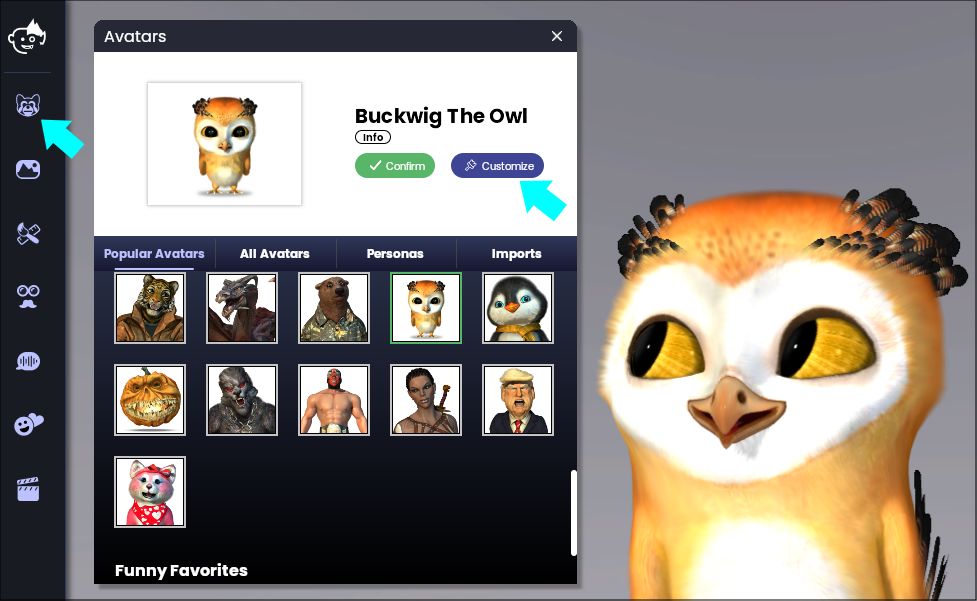
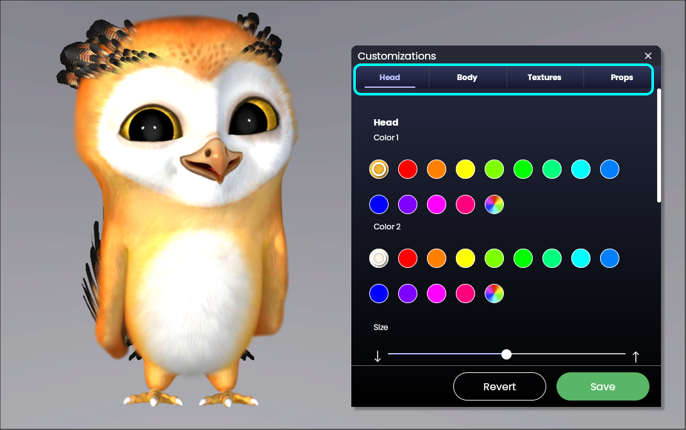
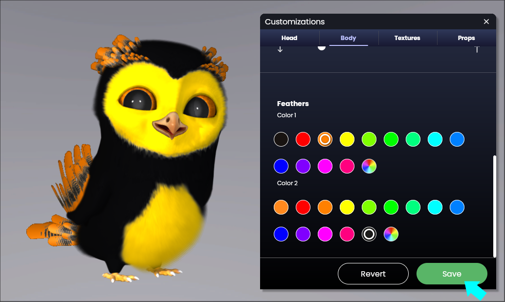

アバターのシェイプと色をカスタマイズするにはどうすればよいですか?
1.「アバター」アイコンをクリックします(画面下部のメニューバーの左から1番目のボタンです)

2.アバターウインドウが開きます

3.カスタマイズしたいアバターをクリックします
4.「カスタマイズ」をクリックします。
-
アバターに体がない場合を除き、頭と体の両方をカスタマイズできます。
-
それぞれの体のパーツの下にあるスライダーでサイズを変更します
プロのアドバイス:アバターの色を変更するにはカラーホイールを使用します。
5.「保存」をクリックして、カスタマイズしたアバターを保存します
